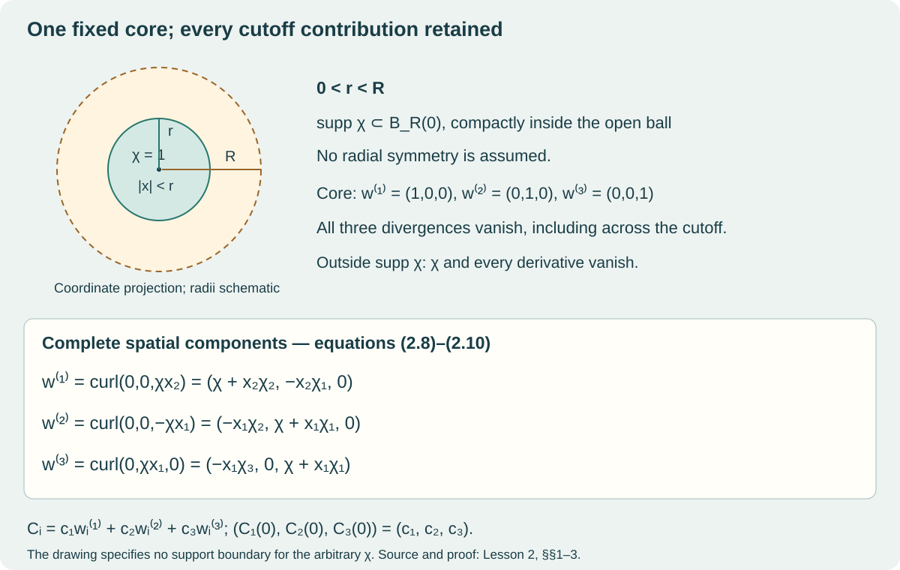

Lesson 2 · Geometry and states in Yang–Mills theory
The three quaternionic colour maps from Lesson 1 now become
coefficients of spatial fields. We will construct those fields,
calculate their curvature and source throughout the cutoff region, and
find their complete energy. The calculation will also tell us what the
static source prescribes as an initial acceleration.
On a narrow screen, wide equations and diagrams can be scrolled
horizontally.
The starting algebra is Lesson 1. We use its bracket
on
,
its Euclidean inner product, and its exact matrix map
(2.1)
In particular,
(2.2)
The factor
will remain in the energy calculation. Spatial differentiation uses
ordinary smooth real functions, the product rule, the chain rule and
integration by parts. All constructions specific to this lesson are
proved below. No evolution or quantum-state theorem is needed for these
calculations.
1. A cutoff with its
support specified
Fix two real numbers
.
Write
,
with the Euclidean metric and the orientation
.
Choose
(2.3)
Here support is the closure of the set on which the function is
nonzero. The subscript
says that this closed set is compact. We impose no radial symmetry or
parity condition on the chosen
.
There really are functions satisfying (2.3). The following example
proves existence without changing the general choice used later. Set
(2.4)
and define
(2.5)
For
,
each derivative of
is a polynomial in
times
.
This follows by induction using the product and chain rules. For every
nonnegative integer
,
as
:
put
and use
.
Thus the right-hand limits of every derivative are zero, matching the
derivatives on
.
This proves smoothness of
across zero.
The denominator in (2.5) is positive everywhere. If
,
its first term is positive. If
,
its second term is positive. Between these values both terms are
positive. Consequently (2.5) is smooth, equals one for
,
and vanishes for
.
Its support lies in
,
as required. Using
keeps the support strictly inside the original open ball.
For the rest of the lesson retain the arbitrary
in (2.3). We use
(2.6)
These derivatives commute because
is smooth. One direct reason is that the integral of
over a coordinate rectangle, computed by two applications of the
fundamental theorem of calculus, is the same four-corner difference as
the integral of
.
Divide by the area and shrink the rectangle; continuity gives equality
at its centre. Repeat for higher derivatives.
2. Three curls and every
coordinate
For a vector field
,
use
(2.7)
Define the original three fields by
(2.8)
The product rule gives all nine components:
(2.9)
Every term is smooth. Outside
,
the function
vanishes on a neighbourhood, so every derivative there vanishes. It
follows that
.
Differentiating (2.9) gives the divergence identities with their
cancelling terms visible:
(2.10)
On
,
all derivatives of
vanish. Thus
(2.11)
This also proves linear independence. If
as a field, evaluate at
;
its three components are
,
hence all vanish.
The Euclidean metric identifies
with
.
This is the stated vector-to-one-form map; it does not change the
components.

The original three curls, their core
values and the retained cutoff terms
The drawing uses a coordinate projection of the balls. The
formulas, rather than the drawn lengths, specify the radii and support.
The core values are (2.11); every cutoff contribution is retained in
(2.9).
3. The
complete 24-dimensional input reaches spatial fields
Use the same ordered real representation as Lesson 1:
(2.12)
An input is
,
of real dimension
.
Put
(2.13)
The letters
are colour coefficients; the index
labels a spatial component. Each
is constant as a function of
.
In particular,
(2.14)
Let
be the real vector space of smooth, compactly supported, divergence-free
vector fields with support in
.
We have constructed a map
(2.15)
Theorem 3.1. The map (2.15) is smooth, quadratic and
equivariant. Its image is the full nine-dimensional space
(2.16)
Its zero set is exactly
(2.17)
This subspace has real dimension
.
If exactly
of
are nonzero, the derivative has rank
and kernel dimension
.
Proof. Define a real-linear map
.
Evaluation at the origin, taking the three spatial components, is an
explicit left inverse:
(2.18)
Thus
is injective. The map
is exactly
,
where
is the onto quadratic map of Lesson 1, Theorem 6.1. Its image is
therefore (2.16), and injectivity of
gives
at every original input. The zero set and all four ranks now follow from
that theorem, including the twelve
directions which remain in the domain.
For completeness, the group action fixes
,
conjugates
,
and left-multiplies each of
by the same unit quaternion
.
Since
,
each
,
and hence every
,
is conjugated by
.
This is the required equivariance. The target coefficients are smooth
quadratic polynomials in the input, proving smoothness and degree.
This lesson proves the map in the original fibre coordinates. Its
constant colour-change identity is exactly what the next bundle lesson
will use to glue the local formulas. No global colour frame has been
chosen here.
4. Curvature throughout
the cutoff region
The quaternionic spatial curvature and its matrix counterpart are
(2.19)
For each
and
,
define
(2.20)
When needed with other index orders, retain
,
,
and the zero diagonal values. Then the exact curvature is
(2.21)
To prove this, expand
as the ordered double sum
.
The
terms are zero. Pairing its
and
terms gives precisely the two products in (2.20). The derivative part
follows directly from (2.13).
All nine derivative coefficients are as follows:
(2.22)
For example, its first entry follows from
Applying the same two derivatives in (2.20) gives each other
entry.
Here are all nine minors as their original two products, including
zeros:
(2.23)
(2.24)
(2.25)
Equations (2.21)–(2.25) give every curvature component for every
original input. Derivative curvature in the cutoff region remains
present even when all three colour coefficients commute.
5. The full static source
For a quaternion-valued function
,
set
(2.26)
The four complete groups of terms obtained from (2.21) are
(2.27)
The sums
each range from
to
;
ranges over
.
No derivative acts on a
.
In particular the derivative of each minor means all four product-rule
terms:
(2.28)
The first line of (2.27) also has an exact useful comparison:
(2.29)
Here (2.10) proves the displayed zero. Every Laplacian component can
be read without differentiating a hidden abbreviation:
(2.30)
For instance,
,
since the second derivative of
is zero. Applying this identity to each product in (2.9) proves (2.30),
including every third derivative within
.
All expressions in (2.27) are smooth and supported in
.
To compare the source with spacetime notation, use
,
,
and the metric
in the coordinates
.
For the time-independent potential with
,
.
Its full physical matrix source, in the convention
,
is
(2.31)
This keeps the coupling in the source itself.
6. Why the source is
covariantly conserved
The source (2.26) satisfies
(2.32)
We prove this identity rather than infer it from the ordinary
divergence of
.
Expanding two covariant derivatives on any smooth
gives
(2.33)
Indeed the mixed ordinary derivatives cancel, the derivatives of
in the cross terms cancel, and the remaining terms are
. Expanding
the last two commutators in the associative quaternion algebra leaves
,
proving (2.33).
Now exchange the two indices in the full ordered sum:
(2.34)
The last equality holds term by term because
.
In ordinary derivatives (2.32) reads
(2.35)
It includes the second sum. It does not say that either sum
separately vanishes, nor that
is zero.
7. Energy with all cutoff
coefficients
At zero electric field, the physical energy of the profile is
(2.36)
The second equality is exactly (2.2). The integrals are finite
because all curvature components are smooth with compact support. Define
the original cutoff coefficients, with each indicated index range
retained:
(2.37)
The symbol
denotes an energy coefficient in this display; the spacetime source has
one index
,
as in (2.31). Squaring (2.21), using the real quaternionic inner
product, gives
(2.38)
This is an equality, not a core approximation. Its three lines have
degrees four, six and eight in the original selected quaternionic
coordinates, because each
is quadratic. We have not assumed any symmetry of
,
and every mixed
term remains. Although a mixed term can have either sign, the complete
expression is nonnegative by (2.36).
Theorem 7.1. On the full input (2.12),
exactly on the twelve-dimensional subspace (2.17).
Proof. If
,
then every
and every
is zero, so the energy is zero. Conversely, (2.36) is the integral of a
continuous nonnegative function. If its integral is zero and its value
were positive at some point, continuity would give a ball of positive
integral. Therefore
everywhere.
We now prove the needed implication from flatness to vanishing in the
original gauge. For any smooth compactly supported quaternionic field
with
and
,
form
(2.39)
Differentiation, including the derivative of its second term,
gives
(2.40)
The last inner products are zero since
is perpendicular to
.
Let
.
This is a smooth compactly supported ordinary vector field, and
(2.41)
Integrate on a box containing the support in its interior. The
fundamental theorem of calculus in each coordinate makes the integral of
equal to its two boundary-face integrals; both are zero. Thus (2.41) has
integral zero, forcing
everywhere by the same nonnegativity argument. Finally, (2.18) gives
,
and
for each unit
gives
.
The coordinates
remain unrestricted.
The argument includes nonzero commuting colours. Their constant core
can be flat while their cutoff region still has positive energy.
8. The
three-colour core and its complete source
Choose
,
keeping
arbitrary. Then
.
On the original ball
,
(2.11) makes
.
Consequently all derivative terms vanish there and
(2.42)
The matrix magnetic density, before the energy factor
,
is
(2.43)
For example,
,
since
.
The same computation gives the other two terms. Hence the core supplies
the precise lower bound
(2.44)
The annulus contribution is still in (2.38). It has not been replaced
by this lower bound.
The three source components in the core are
(2.45)
Thus (2.31) becomes
(2.46)
These are nonzero sources. Covariant conservation (2.32) is
consistent with them: each core term
is zero. The full cutoff calculation, including its spatial derivatives,
remains (2.27).
9. Using the source
as an initial acceleration
Here is a concrete next step based on the source we just calculated.
Let
and allow the quaternionic spatial potential to depend on
.
With the same Lorentz metric as before,
and
.
The source-free equations in this gauge therefore read
(2.47)
The first is Gauss’s equation; it is the
component after
.
At data
,
,
that equation is satisfied, and the second prescribes
(2.48)
We can implement this initial acceleration as an explicit smooth
path:
(2.49)
It has the original compact spatial support and finite energy at
every fixed
:
its electric field is
,
and its curvature is a finite sum of smooth compactly supported terms.
It satisfies Gauss’s equation for every real
,
because
(2.50)
The first zero is (2.32); the second consists of zero commutators. To
find what remains of the evolution equation, keep the complete
tensors
(2.51)
The original
is the potential;
in this equation is the two-index tensor explicitly defined on its first
line. Every
in (2.51) is formed from the original
.
The residual of the full source-free equation along (2.49) is
exactly
(2.52)
To check all powers, first put
.
Expansion of the curvature and its spatial divergence gives
(2.53)
The temporal term is
.
Adding it cancels the displayed constant term and leaves every term in
(2.52). This computes what the first correction achieves and what it
leaves. Exercise 7 evaluates the residual on the core, where it is
explicitly nonzero for small nonzero
.
A later lesson constructs the actual source-free classical evolution
with the original cutoff region retained.
10. Exercises with complete
solutions
Exercise 1.
Check a derivative across the cutoff
Use the third field in (2.9) to compute
and
.
Identify every product-rule contribution.
Solution. Its second component is zero and its third
is
.
Thus
Since
,
this is (2.22). Its divergence is
The undifferentiated
terms are needed for the cancellation.
Exercise 2.
A commuting field with positive energy
Take
,
,
where
.
Calculate its curvature and source. Prove that its energy is positive
even though its core curvature is zero.
Solution. All commutator terms vanish, but the
derivative terms give
For any real smooth compactly supported vector field
,
expanding the square and integrating the cross term by parts twice
yields
For
,
the last term is zero. If the first were zero, all first derivatives
would vanish everywhere; integrating along line segments would make
constant. Compact support would force that constant to be zero,
contradicting
on
.
Therefore the energy is positive. On the core every
is zero, so the required energy is supplied outside the core.
Exercise 3. Retain the
unused directions
At
,
find the rank and kernel dimension of
,
without setting any unused coordinate to zero.
Solution. Exactly
are nonzero, so the rank is
.
The kernel includes all
directions of
,
all four
directions, and one direction in each of the two nonzero quaternionic
slots. The latter lines are
and
,
in their distinct domain slots. Thus the kernel dimension is
.
Their image slots are independent by the evaluation map (2.18).
Exercise
4. Recover the coefficients and an exact norm bound
For a field in (2.16), recover its three coefficients and prove
Solution. Equation (2.18) recovers each coefficient
separately. On
,
the integrand is exactly
.
The integral outside the ball is nonnegative, giving the stated
constant. The exact full expression, retaining that exterior
contribution, is
All nine entries of this spatial Gram matrix remain; the bound does
not replace the matrix by a scalar.
Exercise 5. Keep both
physical factors
For the equal-colour core, find the matrix magnetic density, the core
energy contribution and the physical matrix source. Which of these
includes the factor
?
Solution. The three matrix curvatures in (2.42) have
squared norms
,
so the magnetic density is
.
The energy definition includes
,
giving core density
and integral
.
The full energy also includes the cutoff region. The source definition
is
;
since
,
it gives
,
with
.
Both energy and physical source retain their stated coupling factors;
the curvature density itself does not contain the coupling.
Exercise 6.
Scale the actual quaternionic input
Multiply the three selected coordinates
by a real number
,
leaving
untouched. Give the complete scaled curvature, energy and source
degrees.
Solution. Conjugation is real-linear, so each
coefficient becomes
.
Hence
and
In (2.27), the first line acquires
,
the second and third each acquire
,
and the fourth acquires
.
These statements include
,
negative
,
all rank strata, and the unchanged twelve unused coordinates. This is
input scaling; no spatial dilation or change of coupling has been
made.
Exercise
7. Compute the first correction’s entire core residual
Evaluate (2.49) and (2.52) at the equal-colour core. Give every
coefficient of its spatial residual and identify the times at which its
spatial curvature vanishes.
Solution. Write
.
Since
,
the path is
For
,
its spatial divergence of curvature is
.
This follows by factoring the three powers of
from
and using (2.45). The full residual is
Equivalently, the exact tensors of (2.51) give
For example
;
;
and
.
Multiplication by
reproduces every term above. The path satisfies Gauss’s equation for
every
,
but this nonzero residual prevents it from being the source-free
evolution.
Its spatial curvature is
,
so it vanishes at
.
The electric curvature
is nonzero at those times. Neither these magnetic zeros nor the electric
terms are omitted from the statement.
11. Sources and the next maps
The exact spatial fields and domain labels come from the programme’s
corrected
bridge, §§7–9. The complete energy polynomial and zero-energy
argument are received from the Cauchy
continuation, CE18–CE23 and Proposition 4.1. The
initial-acceleration and correction calculations are received from the
higher-carrier
continuation, HC14–HC20. The proofs and teaching exposition needed
here have been written out in this lesson; these citations identify the
earlier programme results.
The originating
construction was circulated by Levent Alpöge and produced with Claude.
The programme
attribution record records that source and its role. The spatial and
source calculations taught here are later programme derivations. This
lesson does not attribute them to the originating geometric
manuscript.
The next lesson uses the proved colour-change identity to construct
the associated-bundle map and its higher carrier. Later lessons keep the
full cutoff fields when constructing actual classical evolution and
holonomies, then apply physical gauge projection and the finite-lattice
Hamiltonian. The programme’s continuum gapless-state construction
remains an active research target.
Mathematical text, exercises, solutions and original figure: CC0
1.0.